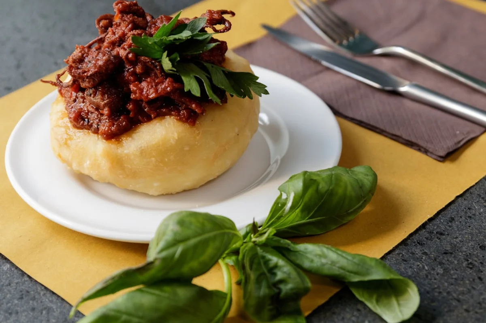
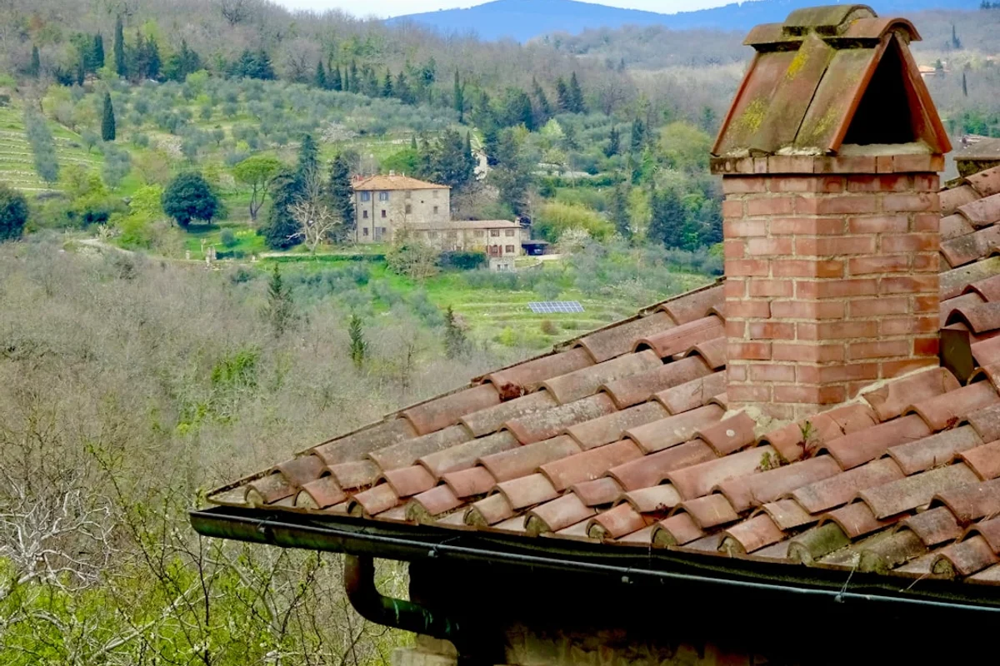

Introduzione
C'è uno street food autentico Calabria locals Catanzaro che non troverai su nessuna guida patinata, che non ha hashtag virali e che non ha mai cercato l'attenzione dei food blogger di passaggio: si chiama morzello, si mangia dentro una pitta, e se non sai dove andare è quasi impossibile trovarlo. Non perché sia segreto, ma perché appartiene a una città che ha sempre cucinato per sé stessa.
Catanzaro è il capoluogo di regione calabrese meno fotografato d'Italia. Arroccata tra due fiumare, collegata al mare da un viadotto che sembra sospeso nel nulla, è una città verticale e orgogliosa che non ha mai dovuto sedurre i turisti per giustificare la propria identità. E il morzello ne è la prova più eloquente: un piatto di quinto quarto, rosso di pomodoro e piccante di peperoncino, che richiede ore di cottura lenta e si consuma in piedi, avvolto in una pitta morbida, quasi sempre al mattino presto o a pranzo.
Questo non è un articolo per chi vuole "scoprire la Calabria autentica" come si legge ovunque. È un articolo per chi vuole capire perché un piatto di frattaglie cotto in un tegame di coccio sia diventato il simbolo gastronomico di una città intera, e dove andare per mangiarlo senza fare la figura del turista che ordina señalando il cartello.
Cos'è davvero il morzello (e perché non è un semplice spezzatino)
La parola morzello deriva quasi certamente dal latino morsus, un boccone. Ma chiamarlo "boccone" sarebbe riduttivo quanto chiamare il ragù napoletano "sugo con la carne". Il morzello è un piatto di quinto quarto, costruito su tagli come trippa, polmone, cuore, fegato e intestino di vitello, cotti per ore in un fondo di pomodoro, peperoncino piccante, origano e aceto. Il risultato è una massa densa, profumata, con una piccantezza che non brucia subito ma cresce e si sedimenta.
Ciò che lo distingue da qualunque altro piatto di frattaglie della tradizione meridionale è la consistenza finale: il morzello non deve essere brodoso né asciutto. I morzellari esperti parlano di una via di mezzo che a Catanzaro hanno un nome preciso: deve "filare", cioè essere abbastanza denso da non colare fuori dalla pitta ma abbastanza umido da inzupparne la mollica. Trovare quel punto richiede esperienza, e ogni bottega ha la sua interpretazione.
Un dettaglio che quasi nessuno racconta: il morzello si prepara tradizionalmente in tegami di terracotta smaltata, non in pentole di alluminio o acciaio. La terracotta distribuisce il calore in modo uniforme e trattiene i succhi in modo diverso dal metallo. Chi ha mangiato il morzello in un locale che usa ancora questi tegami originali e poi lo ha assaggiato altrove dice che la differenza si sente. Non è folklore: è chimica della cottura.
La pitta: il pane che non è un pane qualunque
La pitta è un disco di pane morbido, leggermente spesso al centro e più sottile ai bordi, con una consistenza che sta tra una focaccia e un pane arabo. Si apre a metà come un panino, ma la crosta è quasi assente: la mollica deve assorbire il condimento senza disintegrarsi. Non è la stessa cosa della pitta leccese, non è la stessa cosa del pane piatto siciliano. È specifica, e i panifici catanzaresi la producono ancora secondo ricette tramandate.
Il formato ideale per il morzello è la pitta "mbrusciata", cioè leggermente tostata sulla brace o su una piastra prima di essere farcita. La tostatura crea una superficie microscopicamente più resistente che impedisce al sugo di sfondare il pane troppo in fretta, allungando di qualche minuto il tempo in cui il boccone rimane integro. Questo dettaglio tecnico, apparentemente banale, cambia completamente l'esperienza di mangiarlo in piedi per strada.
Chi visita Catanzaro e cerca la pitta in una panetteria generica rischia di trovare versioni industriali o troppo spesse. I locali sanno che la pitta giusta si compra nei panifici di fiducia dei morzellari stessi: alcuni gestori preparano la pitta in casa propria ogni mattina prima di aprire, altri si riforniscono da fornai specifici del quartiere. Chiedere da dove viene la pitta è, a Catanzaro, una domanda perfettamente legittima.

Dove mangiarlo: i locali storici di Catanzaro
Catanzaro non ha una via dello street food come Palermo o Napoli. Il morzello si mangia in piccole botteghe chiamate morzellerie, spesso senza insegna luminosa, spesso aperte solo a pranzo, e alcune aperte esclusivamente la mattina presto per chi lavora nei mercati o nei cantieri vicini. Non sono ristoranti. Non hanno coperti. Si entra, si ordina, si mangia in piedi o su uno sgabello, si esce.
Tra i riferimenti storici della città, Morzelleria Mastroianni è uno dei nomi che i catanzaresi citano con rispetto quasi automatico: una bottega del centro che lavora con continuità da decenni e che ha resistito senza mai cercare visibilità turistica. Un altro indirizzo che i locals indicano con naturalezza è Da Salvatore, nel quartiere storico vicino al Duomo, dove il morzello viene preparato la mattina presto e finisce prima del primo pomeriggio. Quando finisce, finisce.
L'orario è un elemento cruciale che chi viene da fuori sottovaluta sistematicamente. Il morzello non è un piatto serale. È colazione tardiva, spuntino di metà mattina o pranzo. Presentarsi alle diciannove sperando di trovarlo è come cercare il mercato del pesce a Palermo alle tre del pomeriggio: tecnicamente possibile, praticamente improbabile. Chi arriva a Catanzaro con l'intenzione di mangiarlo deve organizzare la giornata di conseguenza.
Un insider tip che vale la pena conoscere: durante la festa della Madonna di Porto Salvo, patrona di Catanzaro, alcune morzellerie aprono anche in orari atipici e la fila si allunga. È uno dei pochi momenti in cui il morzello smette di essere cibo quotidiano e diventa rito collettivo visibile.
Perché questo piatto non ha mai lasciato Catanzaro
Il morzello è uno di quei cibi che la globalizzazione gastronomica non ha ancora inglobato, non per mancanza di qualità ma per una combinazione di fattori che lo rendono strutturalmente difficile da esportare. Primo: gli ingredienti del quinto quarto sono deperibili, non si prestano alla logistica della distribuzione moderna. Secondo: la cottura lenta in terracotta non scala industrialmente. Terzo: il pubblico di riferimento non ha mai avuto bisogno di cercare consenso esterno.
Questa è la differenza fondamentale rispetto a cibi di quinto quarto che hanno trovato fama internazionale, come il lampredotto fiorentino o la trippa romana. Firenze e Roma sono città con un flusso turistico che ha trasformato anche i cibi più umili in attrazioni. Catanzaro no. E quella separazione ha preservato il morzello da qualunque processo di gentrificazione gastronomica: non è diventato più caro, non è stato "reinterpretato" in chiave fusion, non è finito in un menu degustazione da quarantacinque euro.
"Il morzello non ha bisogno di essere spiegato a chi è di Catanzaro. E non ha bisogno di essere venduto a chi non lo è." Questa frase, sentita da un gestore di una morzelleria storica del centro, sintetizza meglio di qualunque analisi il rapporto tra questo piatto e la città che lo ha generato.
Esiste anche una dimensione identitaria quasi politica: i catanzaresi usano spesso il morzello come punto di orgoglio regionale in contrapposizione alla maggiore visibilità della cucina siciliana o pugliese. In un Sud che spesso si sente ignorato dalla narrazione gastronomica nazionale, il morzello è la risposta di una città che ha smesso di aspettare il riconoscimento.

Come si mangia: il galateo non scritto della pitta con morzello
Mangiare il morzello nella pitta richiede una piccola dose di tecnica e una completa assenza di autocontrollo estetico. La pitta viene riempita generosamente, spesso schiacciata leggermente dal gestore prima di consegnarla, e il sugo rosso inizia a filtrare quasi subito. Non esistono tovaglioli sufficientemente grandi. Non esiste un modo elegante di farlo.
I locals tengono la pitta con entrambe le mani, leggermente inclinata verso il basso per contenere il riempimento, e mangiano velocemente: non per maleducazione, ma perché dopo qualche minuto la pitta si imbeve troppo e la struttura cede. C'è una finestra di circa cinque minuti in cui il morzello nella pitta è esattamente come deve essere. Dopo, è ancora buono ma diverso.
Sul beverage: l'abbinamento tradizionale è acqua naturale o, per chi lo preferisce, un bicchiere di vino rosso locale leggero. Alcune morzellerie tengono ancora una piccola damigiana sul bancone. Chi ordina una birra non viene giudicato, ma nessuno lo imiterà spontaneamente. Il caffè si prende dopo, al bar accanto, come segno che il pasto è chiuso.
Considerazioni finali
Il morzello nella pitta è lo street food autentico Calabria che Catanzaro non ha mai smesso di fare, anche quando nessuno guardava. E forse è proprio questo il motivo per cui vale la pena cercarlo: non perché sia esotico o pittoresco, ma perché è onesto in un modo che i cibi da Instagram quasi mai riescono a essere.
Se stai pianificando un viaggio in Calabria e pensi che la tappa obbligata sia solo la costa o i borghi del Pollino, considera di aggiungere una mattina a Catanzaro, quella giusta, quella in cui arrivi prima delle dodici, trovi la morzelleria aperta e ti sporchi le mani di sugo rosso su un marciapiede del centro. È uno di quei momenti che si ricordano meglio di qualunque ristorante stellato.
Se sei già stato a Catanzaro e hai il tuo indirizzo di fiducia, scrivilo nei commenti: le morzellerie migliori si trovano ancora per passaparola.
Domande frequenti
Il morzello si trova in tutto il resto della Calabria?
No, e questa è una delle sue caratteristiche più distintive. Il morzello è un piatto iperlocale, legato a Catanzaro in modo quasi esclusivo. Altrove in Calabria si trovano piatti di quinto quarto e varianti di pane farcito, ma il morzello nella pitta come tradizione codificata esiste praticamente solo nel capoluogo. Chi lo cerca a Reggio Calabria o a Cosenza troverà altro.
È un piatto adatto a chi non è abituato alle frattaglie?
Il morzello ha un sapore deciso e la presenza delle frattaglie è percepibile, ma la lunga cottura nel sugo di pomodoro e peperoncino ammorbidisce molto la componente organolettica più intensa. Chi non mangia mai quinto quarto potrebbe trovarlo sorprendentemente accessibile. La vera variabile è la piccantezza: alcune versioni sono molto speziate e l'intensità dipende da chi cucina.
Quale è l'orario migliore per trovarlo?
Tra le dieci del mattino e le tredici e trenta. Alcune morzellerie aprono già dalle otto per il pubblico dei lavoratori e dei mercati. Arrivare dopo le quattordici è rischioso: molti locali chiudono quando finisce il morzello del giorno, senza orari fissi di chiusura.